Place parts or subassemblies with predefined relationships
Place parts with predefined relationships
You can use the following options to place parts with predefined relationships:
Place a part in Assemble mode
-
Display the Parts Library tab.
-
Select the part you want to place and drag it into the assembly window.
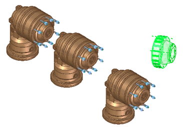
-
On the Assemble command bar, set the Assemble mode option to Assemble.
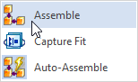
-
Click an element on the placement part.
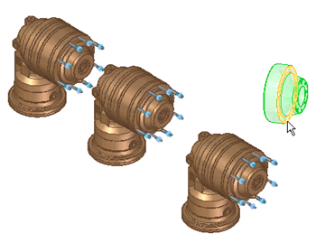
You can also change the relationship type in this step.
-
Click an element on the target part.
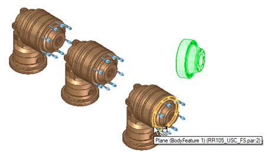
-
Repeat steps 5 and 6 until the placement part is fully constrained.
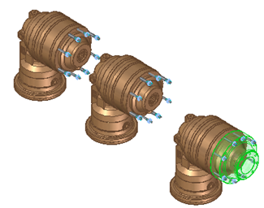
-
Right-click to place the part.
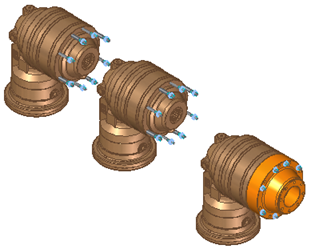
Place a part in Capture Fit mode
-
Display the Parts Library tab.
-
Select the part you want to place and drag it into the assembly window.
-
On the Assemble command bar, set the Assemble mode to Capture Fit.
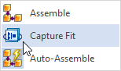
The Manage Relationships dialog box displays the predefined relationships.
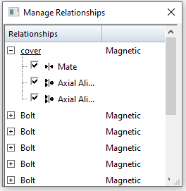
-
Click an element on the target part to place the mate relationship.
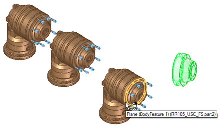
The Maintain Relationships dialog box updates to reflect that the mate relationship is placed.
-
Click an element on the target part to place the first axial align relationship.
The axial align relationship is placed and the Maintain Relationships dialog box is updated to reflect the placement.
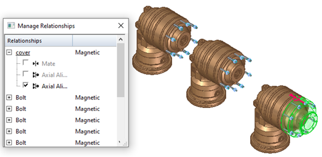
-
Click an element on the target part to place the final axial align relationship.
The Maintain Relationships dialog box is dismissed and the part is placed.
Place a part in Auto-Assemble mode
-
Display the Parts Library tab.
-
Select the part you want to place and drag it into the assembly window.
-
On the Assemble command bar, ensure that the Assemble mode is set to Auto-Assemble.
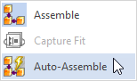
Note:Auto-Assemble is the default setting when placing parts in the assembly.
-
On the Assemble command bar, click the Identify Targets option
 .
.The part is placed at all of the matching targets.
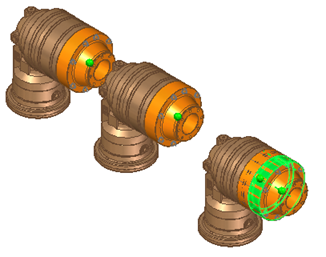
Note:If you do not want visual feedback, you can locate the group and place the part. If you choose to do this, you must place the parts one at a time.
-
Click the Toggle Component Selection option
 and then click any target parts where you do not want the placement part placed.
and then click any target parts where you do not want the placement part placed.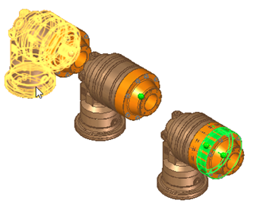
The part becomes transparent, indicating that the placement part will not be placed at this target part.
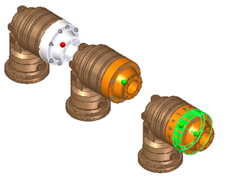
Note:You can also press Ctrl + T to toggle the selection.
-
Right-click to place the part.
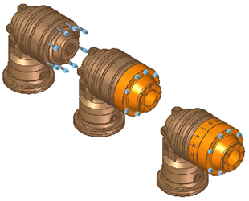
Place subassemblies with predefined relationships
You can place a subassembly with predefined relationships in the same way you place a part with predefined relationships.
How do I
Insert a part from 3Dfind.itAssemble several parts in an assembly
Display reference elements in the Place Part window
Place a part in an assembly
Capture the assembly relationships for a part
Create predefined relationships on a part or subassembly
Add assembly relationships to parts in an assembly automatically
Delete an assembly relationship
Flip a part in an assembly
Learn more
Placing parts in assembliesLook up more details
Insert ComponentInserting components from 3Dfind.it
Clone Component command
Clone Component command Options dialog box
Clone Component command bar
Assemble command
Place Part command bar
Capture Fit command
Capture Fit Dialog Box
Assign Capture Fit command
Assign Capture Fit command bar
Manage Relationships dialog box
Assemble command bar
Assemble command bar Options dialog box
Relationship Assistant Settings dialog box
Relationship Assistant Options dialog box
Assembly Relationship Assistant command bar
Assembly Relationship Assistant command
Delete Relationship command (Assembly Environment)
Maintain Relationships command (Parts Library Tab)
Flip Command